A uniform's story shouldn't end when a child outgrows it.
Vidyalaya Loop is a school-linked circular service that helps families pass on, repair and reuse school uniforms and selected supplies. The school is the drop-off point. The Loop team owns every step.
kept “for someone”…Illustrative persona image. Ananya is a persona built from parent interviews.
Chapter 01 · The story behind the problem
Outgrown, not worn out. So why do families keep buying new?
The story starts every June. Ananya's son has moved up a size again. She stands in a queue for over an hour and pays about ₹3,000 for a new set.
Last year's uniform is still clean and sound. It sits in a cupboard, kept “for someone”, until it gets thrown away. There is no organised way to pass it to another family.
“I'm happy to pass on a uniform, but I need to know it's clean, fits my child, and meets school rules.”Ananya · persona built from parent interviews
23.3 crore
school students in India, classes 1–12
UDISE+ 2024–25
1–2 years
before a child moves up a uniform size
Deck context
No one
owns the loop of passing a uniform on today
Research finding · Chapter 05
Chapter 02 · The sustainability problem
The scale is large. The loop is missing.
Today a uniform travels in a straight line, from shop to cupboard to bin. Usable life is lost at three points: trust, logistics and ownership.
Buy new
Approved vendor, ~₹3,000 a set, long queues
Wear
One or two school years
Outgrow
Still clean and sound
Store at home
Kept “for someone”, forgotten
Discard
Bin, rag or informal giveaway
Lost to
Trust
Parents can't judge hygiene, condition or fit, so they buy new.
Research: both parents put hygiene first
Lost to
Logistics
No collection, sorting, storage or size matching at school.
Research: book-drive sorting is manual and chaotic
Lost to
Ownership
Teachers can't absorb the work; no one owns the loop.
Research: vice-principal says an external team must run it
14.7 lakh
schools in India
UDISE+ 2024–25
23.3 crore
school students, classes 1–12
UDISE+ 2024–25
7.1–7.8 Mt
textile waste a year
FICCI-RECEIC 2026; MoT 2026
~45%
of post-consumer textile waste enters no recovery path
FICCI-RECEIC, Apr 2026
~85%
of the unrealised value sits in reuse, not recycling
FICCI-RECEIC, Apr 2026
>95%
of sorting is manual, with no standard grading
FICCI-RECEIC, Apr 2026
My interpretation
Reuse keeps a garment's full function, so reuse and repair come before recycling. Grading at intake is the real bottleneck. Scale proves the problem is real, not that a market exists, so I show no market-size figure and quote waste as a range.
SDG 12 · primary
Responsible consumption
Target 12.5: reduce waste through prevention, reduction, reuse and recycling. Extend uniform life so fewer usable items are discarded.
We track: items accepted, repaired, redistributed, recovered; new purchases avoided.
SDG 10 · supporting
Reduced inequalities
Affordable, dignified access to essentials, with assisted channels for families who are offline.
We track: savings per family; share served via WhatsApp or desk.
SDG 13 · only if proven
Climate action
Reuse can displace new purchases and their footprint, but only a pilot can show it.
We track: carbon claimed only once a credible baseline exists.
The waste hierarchy the service works at
PreventBuy fewer new uniforms
ReuseKeep the garment in use
RepairFix before replacing
RecoverRecycle what can't be worn
DisposeTarget: zero items
← Where Vidyalaya Loop worksLast resort →
Four questions the research had to answer
Will parents donate, sell or buy pre-owned school items, and what stops them?
Does a school-linked process earn more trust than peer-to-peer listing?
Which operating model balances trust, access and cost: peer-to-peer, school-run or central?
Who gets left out if the service is digital-first?
Literature review→Competitor analysis→Interviews→Evidence matrix + affinity map→Design opportunities
Chapter 03 · Research and discovery
Everyone wanted reuse, on their own terms.
Four exploratory, semi-structured interviews with the people who keep a uniform alive, framed by a literature review and a competitor scan.
P1
Parent
Private CBSE school
Cost, fit, hygiene, trust
P2
Parent
Semi-urban public school
Budget, hand-me-downs, access
P3
Vice-principal
K–12 school, 1,500 students
Rules, liability, staff workload
P4
Tailor
Neighbourhood, 22 years
Repair types, cost, batches
Parents
As long as it is washed clean with no permanent stains or odors, I am fully open to it.
Nearly ₹3,000 a set and an hour-long queue
Hygiene is the strongest concern
School / PTA feels safer than classifieds
PTMs are a natural drop-off moment
School / PTA
The school provides the space, but an external digital framework manages inventory so teachers aren't burdened.
Crest and pattern rules must be met
Book-drive sorting is manual and chaotic
Middle sizes run out, others pile up
Needs SMC, Principal and PTA approval
Tailor
A scheduled weekly school hub pickup/drop-off model makes workflow steady.
Hem ~₹50, zip ₹100–150
Repair only when fabric is still strong
Wants clean, tagged batches
Agreed prices, paid on time
Research limit
Four exploratory interviews. They set the direction of the design; they are not statistically representative of Pune parents, schools or tailors.
Literature reviewFive sources · price opens the door, trust decides
86%
of parents in an Australian case study named affordability as the main motivator. Read with care: one private school in Victoria. I used it as interview prompts, not as Pune evidence.
Source
Key finding
Design implication
Behal, Islam & Tan (2025) 106 parents, focus group of 6
Affordability is the main motivator (86%); sizing, hygiene, quality and stigma hold parents back
Show size, condition, hygiene and price up front
Shamsi et al. (2023) 409 respondents, India NCR
Personal benefit, social norms and perceived control shape intent (TPB)
Make reuse feel normal and easy, not just cheap
FICCI-RECEIC (2026)
~45% of textile waste is unrecovered; >95% of sorting is manual
Grading and sorting are the bottleneck; reuse beats recycling
Nolan (2026)
Second-hand markets are fragmented; mothers carry the sourcing load
Make reuse the low-effort default, not another list
Down To Earth
School-specific uniforms limit reuse; little recycling capacity
Check crest and policy limits early; never promise recycling
What holds parents back: limited sizing, hygiene concerns, doubts about quality, social stigma, low transparency.
Competitor landscapeEvery option trades trust against cost
The gap: marketplaces list, upcyclers recover fabric, but no one joins intake, checking, repair and redistribution. Trust and handover are paid for with operating cost, so who pays became an open question I carried to the end.
Chapter 04 · Understanding the people
Trust has to exist at both ends of the loop.
Two personas built from the interviews sit at either end of the service: the parent who gives and gets, and the school that hosts it.
Ananya
Working parent / guardian · 38 · PuneMobile web / WhatsApp preferred
Trust has to be visible before she'll choose pre-owned.
Goals
Keep uniforms affordable as children grow
Find correct size and school-compliant items
Pass on usable items instead of wasting them
Complete exchange without extra trips
Frustrations
Uncertainty about hygiene and stains
Size and fit are hard to judge online
School-specific colours, crests and quality rules
Collection or pickup windows may clash with work hours
Needs
Clear condition grades and cleaning status
Measurements and current-item photos
Transparent price or exchange-credit rules
Convenient drop-off at PTMs and flexible pickup
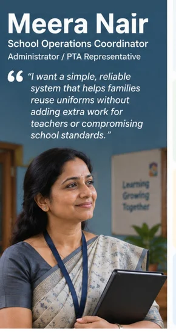
Meera Nair
School operations coordinator · admin / PTA · 38 · PunePrivate CBSE school
Will back reuse only if it adds no work for teachers.
Goals
Maintain school standards and uniform compliance
Support families through a practical reuse initiative
Ensure hygiene, quality and school reputation
Enable a system that is low-maintenance for teachers
Frustrations
Concern about hygiene complaints and skin-health liability
Limited storage space and uneven inventory
Cannot burden teachers with sorting and management
Needs approvals from SMC, Principal and PTA
Needs
A clear, plug-and-play model with defined responsibilities
Quality checks for cleanliness, condition and logo compliance
Flexible collection and distribution (PTM, school gate)
Support from external partners: laundry, tailors, platform
Parent priority
Affordable, clean, properly sized and trustworthy uniforms.
School priority
Compliance, clear responsibility and minimal additional workload.
Illustrative persona images. Ananya is 38 on her persona card; the evaluation persona table (Chapter 11) lists her as 36. In the prototype, the name Meera Nair is used for the Loop staff coordinator after the V2 role change.
Full persona cardsAs designed in the research phase
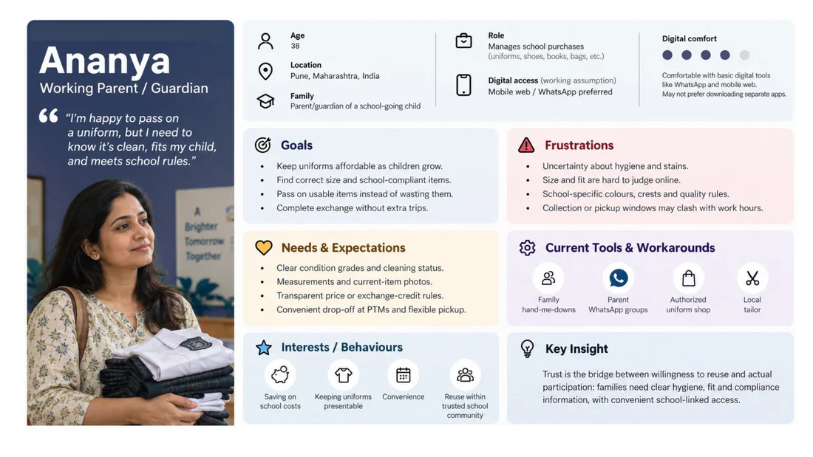
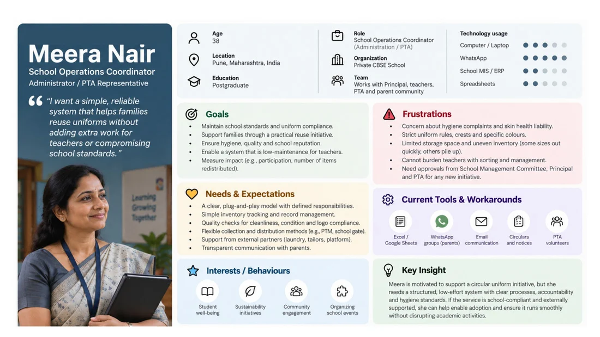
Chapter 05 · Finding the root cause
One sticky, one observation. The interview notes clustered into six themes.
01
Cost and vendor constraints
02
Hygiene and trust
03
School identity and stigma
04
Collection and inventory
05
Repair economy
06
Operating model
The waste wasn't caused by a missing app. It was caused by a missing owner.
Families are willing. So are the school and the tailor. Reuse still fails because collection, hygiene checks, repair, sizing and distribution happen separately, or not at all.
every step had a hand, none had an owner
Research synthesis5 Whys · my analysis
Why 1
Why do families keep buying new uniforms?
Usable outgrown uniforms aren't reaching families who need them.
Why 2
Why aren't they reaching other families?
There's no consistent, trusted process to collect, assess, match and redistribute.
Why 3
Why is there no consistent process?
Collection, hygiene checks, repair, sizing and distribution are handled informally or separately.
Why 4
Why are they handled separately?
Responsibilities, quality standards, inventory and handoffs aren't coordinated.
Why 5
Why aren't they coordinated?
No school-linked circular service with one owner and an end-to-end workflow exists.
Core root cause: a fragmented, informal system with no clear owner, no shared standards and no coordinated inventory-to-redistribution workflow.
Insight 01
Trust is visible
If families can't judge cleanliness, fit and condition, they avoid exchange.
Criterion: publish a standard condition grade, cleaning status and measurements.
Insight 02
School endorsement has a cost
School backing builds confidence, but staff workload and liability can block adoption.
Criterion: define clear ownership, SOPs and escalation, outside the teaching staff.
Insight 03
Reuse needs logistics
Collection alone fails if sizes, repairs and storage are unmanaged.
Criterion: tagged intake, size-level inventory and scheduled repair batches.
The affinity mapParent, school / PTA and tailor interviews
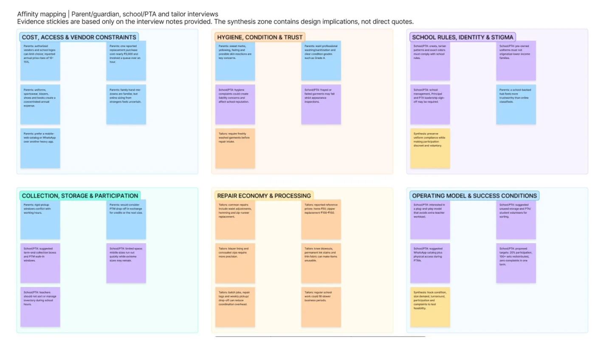
Rule: cluster first, then write a theme that explains the pattern. Evidence stickies come only from the interview notes; the synthesis zone holds implications, not quotes.
Chapter 06 · Define the design opportunity
How might weenable an affordable, trustworthy and low-burden school-linked circular service that helps usable uniforms reach the right families?
Problem statement
Parents need a way to affordably access and pass on reusable school uniforms, because no coordinated, trusted system exists to collect, assess, clean, repair and redistribute usable items. Hygiene doubts, size mismatches, school rules and fragmented exchange leave them frustrated and buying new.
Trust & hygieneHMW make cleanliness, condition, fit and compliance easy to judge?
AccessHMW fit collection and pickup around family schedules?
MatchingHMW connect items to the right sizes at the right time?
School opsHMW support reuse without extra teacher work?
Design statement
Design a school-linked circular service that helps families and schools collect, assess, clean, repair, size-match and redistribute usable uniforms and selected school essentials through clear quality standards, convenient access and manageable operations.
For familiesAffordable, dignified, trustworthy and easy to access.
For schoolsCompliant, accountable and low-burden to operate.
For repair partnersClean, tagged batches with predictable schedules.
Design intent: build a coordinated service ecosystem, not just a listing app, linking digital access with school collection points and defined processing responsibilities.
Proposed feature listMVP, service operations and what to validate first
MVP · trust & exchange
Mobile-friendly catalogue / WhatsApp entry
Item photos, measurements and size details
Condition grading and cleaning status
School-compliance checks (colour, crest, quality)
Transparent price or exchange-credit rules
Reserve item and choose pickup / PTM collection
Service operations
School collection-point intake
Item tagging and inventory status
Reusable / repairable / unrecoverable sorting
Batch repair requests with repair tags
Defined roles for school, PTA and service partner
Basic issue and complaint tracking
Next · validate first
Size-demand and stock availability view
Return reminders and exchange credits
Pickup-slot planning around family schedules
Impact dashboard: items reused and repaired
Demand forecasting by size / term
Additional essentials (bags, shoes, books) after pilot
Chapter 07 · Designing the circular service
One uniform. One tag. A complete circular journey.
Reuse first, repair second, recovery last. The school hosts drop-off and pickup; Loop staff own intake, grading, cleaning, stock and handover.
The service blueprint
Follow
Pick a stage · the panel shows who does what, where, and what is recorded
FFamilies
Donate outgrown uniforms at school, browse and reserve by size, collect at school or a PTM. Donating is free; reserving carries one small, itemised fee.
SSchool / PTA
Provides the collection point, shares uniform rules, communicates with families and signs off repaired items against school standards.
No sorting, inspecting or inventory.
LLoop staff
Collect and inspect, grade and clean, manage size-level inventory, coordinate repairs and hand over to families.
TTailor
Receives clean, tagged weekly batches at agreed prices (hem ~₹50, zip ₹100–150), updates progress and returns work for quality checks.
Proposed operation · not pilotedScreens exist in the prototype
The service ecosystem
Physical, information and people flows
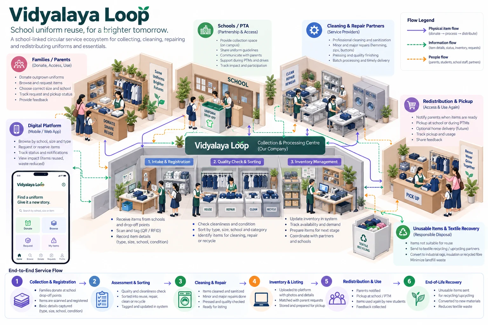
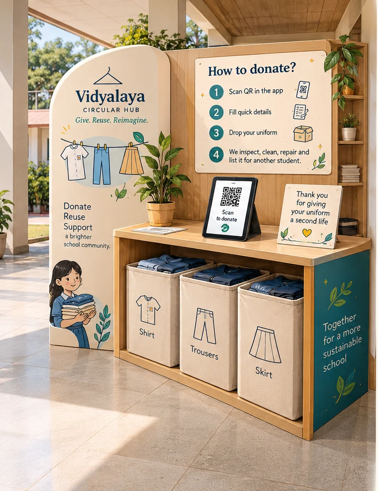
Physical touchpoint · concept
The school kiosk: where donating starts
Collection happens where families already are: the school gate and PTMs.
Scan the QR in the app
Fill quick details
Drop the uniform
The Loop team inspects, cleans, repairs and lists it for another student
Not reusable? The donor sees the reason, and the item goes to a textile recovery partner, never landfill.
Chapter 08 · Concept exploration and service strategy
Three operating models. One hybrid service.
Each model was sketched as a phone journey and scored on five weighted criteria. Scores are my judgement, weighted by evidence strength, to validate with the school and parents.
Explored
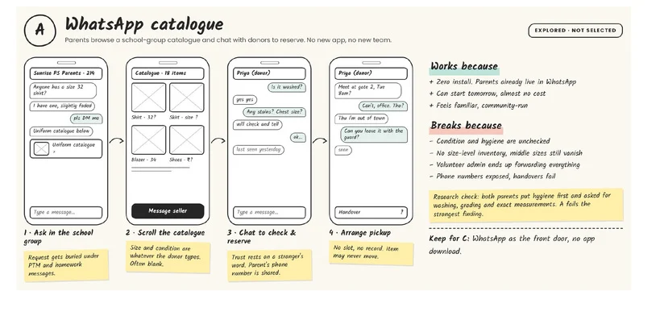
A · WhatsApp catalogue
Easy to start, but trust rests on a stranger. Condition checks are unstructured.
34of 45
Explored
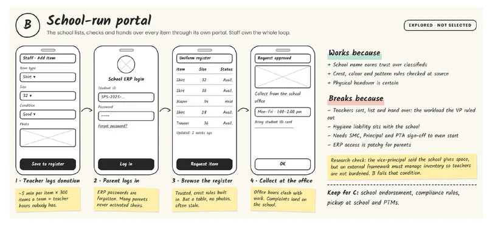
B · School-run portal
Trusted, but the work and the liability land on teachers.
26of 45
Selected
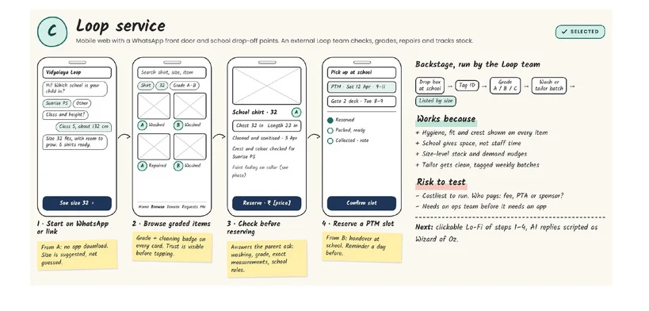
C · Loop service
Visible trust, low school burden. An external team checks, repairs and tracks.
37of 45
The weighted matrixWhy trust counts three times
Criterion (weight)
A · WhatsApp
B · Portal
C · Loop
Trust in condition (×3)
2
4
5
Easy access (×2)
5
3
4
Low school workload (×2)
5
1
4
Low cost to run (×1)
5
3
2
Reaches offline families (×1)
3
3
4
Weighted total (of 45)
34
26
37
Why trust ×3? Hygiene was the strongest finding in both sources.
What the hybrid keeps
From AWhatsApp front door, no app download, familiar chat tone.
From BSchool endorsement, crest and colour rules, pickup at school and PTMs.
New in CExternal Loop team: tagged intake, A/B/C grading, cleaning status, size-level stock, tailor batches.
Who pays?
C's weak spot is cost (2 of 5). Trust and handover are paid for with operating cost, so who pays is the pilot's key risk, and the biggest unresolved business question. Chapter 12 sets out the proposed model.
Six principles, each traced to a research finding
01
Trust is visible
Grade, cleaning date and measurements on the card, before any tap.
from: both parents put hygiene first
02
AI suggests, people decide
AI drafts sizes and grades; staff verify every one.
from: the school's liability concern
03
One owner per step
One tag links donor, hub, tailor and pickup.
from: root cause, no end-to-end owner
04
Fit existing routines
PTM pickup, gate counter, WhatsApp entry.
from: parents prefer WhatsApp and PTMs
05
Dignity by default
Same terms for everyone, discreet handover.
from: the school flagged stigma
06
Honest impact
Count tracked items only; no carbon claims yet.
from: SDG 12.5 measured, not assumed
Chapter 09 · Designing the digital experience
Reuse has to feel as safe and easy as buying new.
Every key feature removes one barrier the research found. The strategy names the behaviour change; the feature is how the prototype does it.
Is it clean?Inform
Grade, cleaning date and measurements on every card.
What will others think?Normalise
School-linked, same terms for all, discreet handover.
Too much effortEnable
PTM pickup, gate kiosk, WhatsApp entry, no app download.
Will it fit?Enable
Child's size remembered, AI size suggestion.
Did my donation matter?Feedback
Tracker until “listed for another family”.
I forget until term startsPrompt
Outgrow reminder at term end.
Repair isn't worth itDefault
The hub routes repairable items to the tailor batch.
One entry, five tabs, every path ends in a request
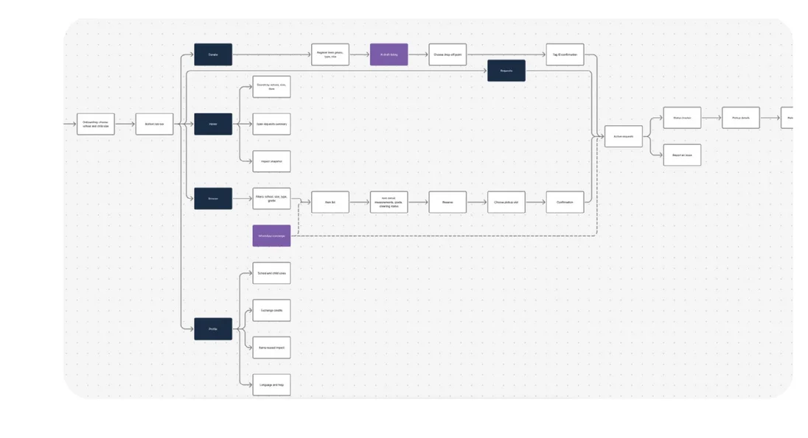
Information architecture across parent, hub and tailor roles. Icon plus word on every tab; Donate sits at the centre, because giving is half the loop.
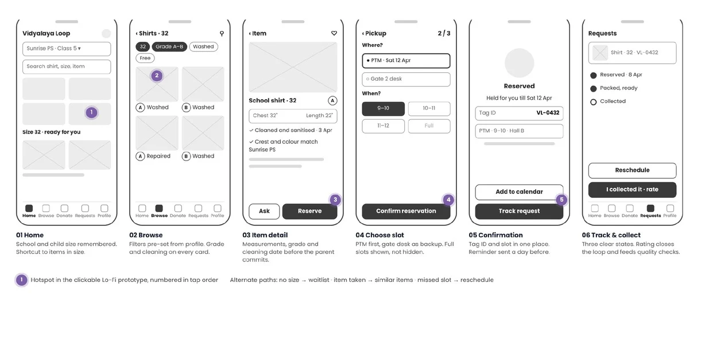
Lo-fi: reserve a uniform in six screens. Greyscale kept test feedback on flow and wording, not colour.
The product's visual language: care, not charity
Navy #1F3558Trust: text, primary buttons
Teal #237873Reuse and success, Grade A
Amber #E39A3ENeeds you: Donate, Ready
Purple #7B5EA7AI only, always editable
Ice #E6F0F9Illustration grounds, Grade B
Paper #F9F5F1App background, warm, calm
The app keeps its own navy-led system; this case study uses a separate editorial palette around it. Warm, illustrated, school-safe: flat garment illustrations, never photos of children, no cartoon mascots or loud gradients.
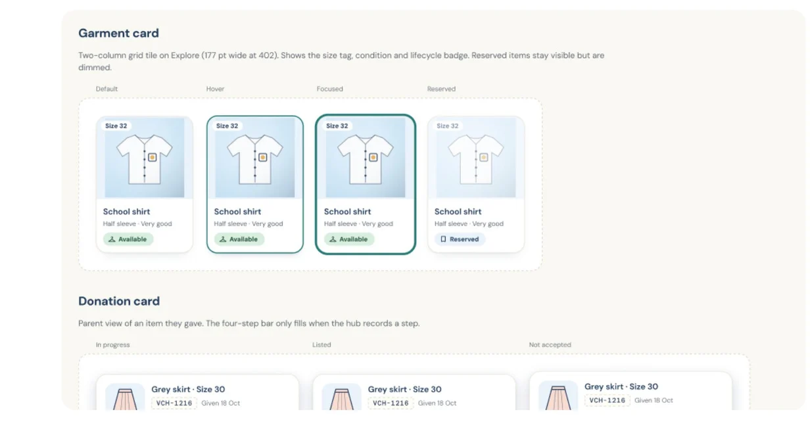
Components carry the trust cues: the garment card shows grade, size and lifecycle badge; the donation card's four-step bar fills only when the hub records a step.
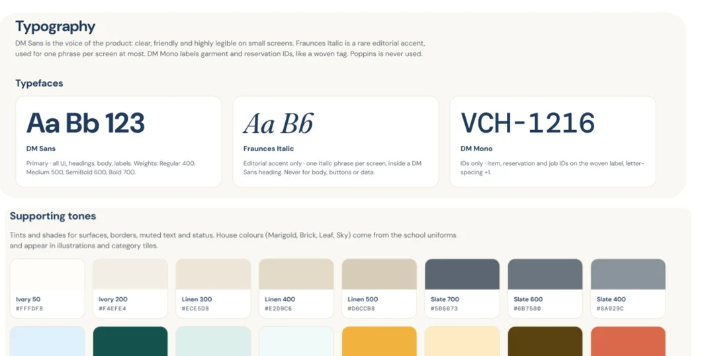
DM Sans for the product voice; a serif italic only for warm accents; DM Mono tag IDs read like a woven care label (VCH-1216).
Colour never aloneGrades show a letter and a word: “Grade A · Like new”.
4.5:1 contrastStatus pairs meet AA contrast.
44 pt targetsTouch targets for one-handed use.
Consistent labelsOne grade scale, one fee rule, one tag format.
MoodboardWarm, illustrated, school-safe
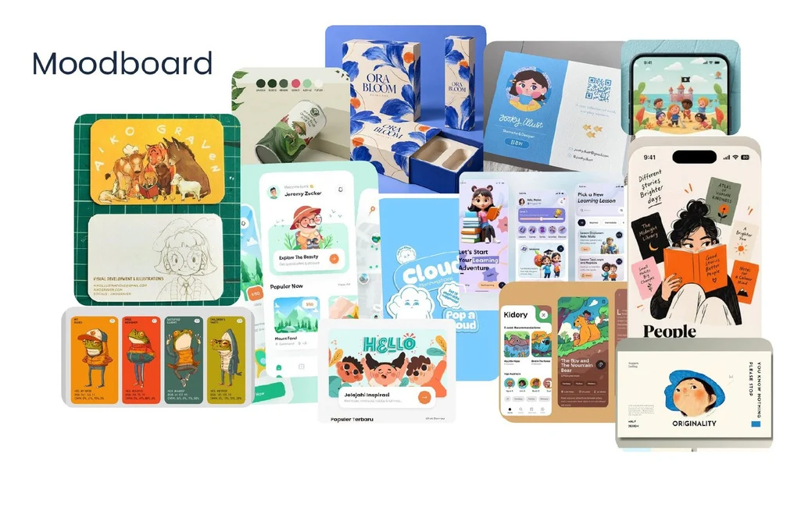
Chapter 10 · The final prototype
Four journeys. One connected circular service.
One journey for each stage of the loop, across three role apps. Every screen here is a capture of the live prototype.
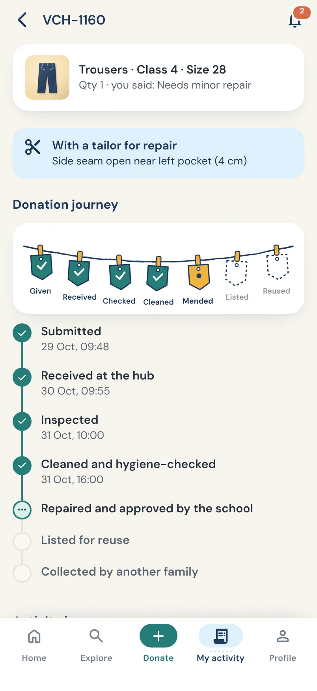
Also in the prototype
The same loop, by WhatsApp or SMS
Parents who prefer chat, or use a basic phone, can find, donate, track and change a pickup time by replying with a number. Records are shared with the app. In the prototype the replies are scripted and nothing is sent.
In prototypeV2 · F2
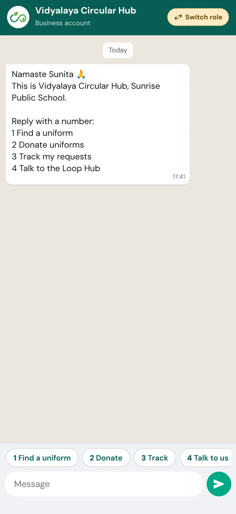
Chapter 11 · Usability evaluation and V2 redesign
A usable interface doesn't automatically mean a working circular service.
Four role-played personas worked through eight task scenarios across all four loop stages, scored pass / fail and rated by heuristic severity (0–4). This was a persona-based scenario evaluation, not a live-user pilot. Then the same prototype was judged against eight circular criteria.
F1Who inspects is contradictory: concept says Loop team, screens say School CoordinatorMatch with real worldSev 4
F2No path for parents without the app: “Continue in chat” leads nowhereFlexibility; error preventionSev 4
F3Price model unclear: Free, ₹60 fee, ₹200, exchange-only, creditsMatch with real worldSev 3
F4Three condition scales, plus a parent self-gradeConsistency and standardsSev 3
F5Rescheduling hidden in one state; hold time and no-show rule unstatedUser control and freedomSev 3
F6Tailor cannot decline or re-quote; payment not shownUser control and freedomSev 3
F7No complaint or return path after collectionHelp users recover from errorsSev 3
F8English-only screens, though Hindi and Marathi are promisedAccessibilitySev 3
“Where's ‘change’? I don't want to cancel and lose the shirt.”
“‘Free’ on one and fee on another. Is free for poor people? I don't want her friends to know.”
“There is only View details and Accept. I will call Meera on WhatsApp.”
“‘Unable to accept, damaged fabric.’ But what happens to it? Is it thrown away?”
“‘Every item finds a second chance.’ Not if it's rejected. Show me actual numbers.”
The sharpest finding wasn't about usability. Mixed price labels made a parent feel marked as poor: a dignity failure.
Quotes from role-played personas during the scenario evaluation.
Method: personas and tasksFour role-played personas · eight task scenarios
ID
Persona
Digital comfort
Tasks
P1
Ananya, 36 · working parent
High
T1–T6
P2
Pooja, 45 · parent, low digital literacy
Low
T1, T3
P3
Rohan, 20 · student
Very high
T1–T3
P4
Roopa, 38 · tailor / repair partner
Low–medium
T7, T8
#
Scenario
Pass if
T1
Find a shirt that fits and reserve it
Right size, slot, code, under 3 min
T2
You can't make your slot. Change it
New slot booked without help
T3
Donate two outgrown items
Submitted, ID shown, next step clear
T4
One item was not accepted. Why?
Reason and next life found
T5
Does the hub use teacher time?
Says who works; finds summary
T6
A reserved shirt had a stain
Finds inspection record, acts
T7
Accept a repair job, return it
Accepted, updated, sent back
T8
Can't fix the lining for the estimate
Raises issue or re-quotes
Per-task pass / fail results aren't documented in the project, so none are shown. Ananya's age is 36 in this table and 38 on her persona card.
V1 → V2: three redesigns
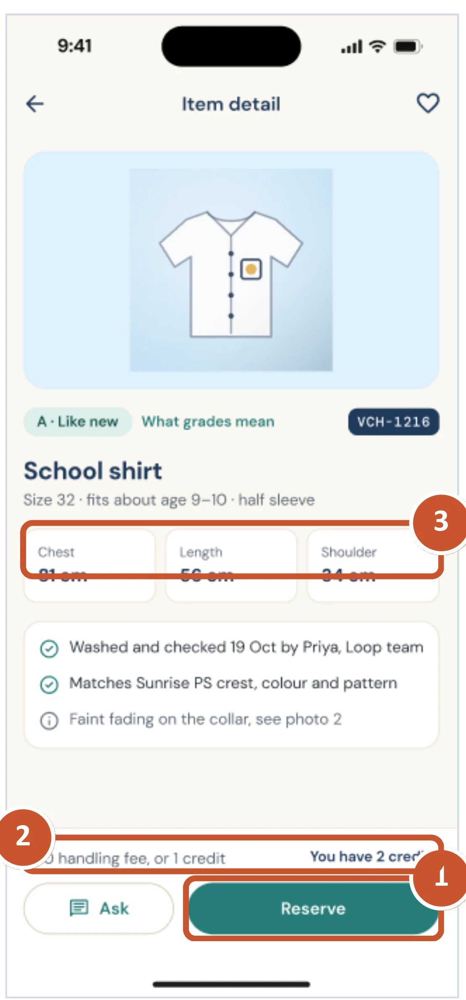
Before · V1 · from deck
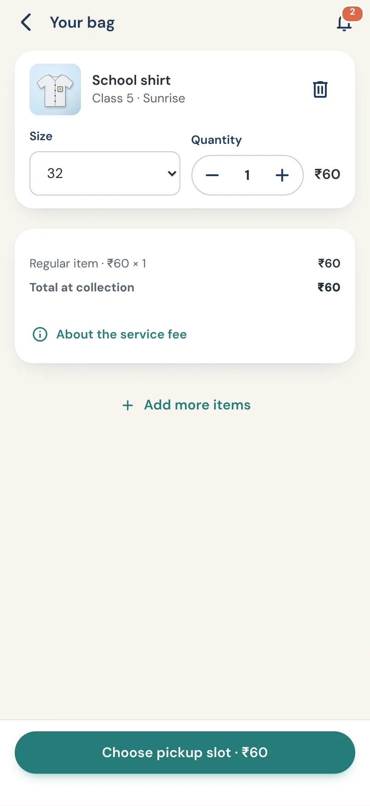
After · V2 · live prototype
Built in prototypeNot retested
Reserving: one item at a time → a full set in one bag
Several items, one pickupBefore“Reserve” booked a single itemAftera bag holds shirt, trousers and sweater together
Size and quantity in placeBeforesize only shown as text, no quantityAftersize dropdown and − / + quantity on each item
Fees anyone can followBefore“₹60 or 1 credit” confused testersAfteritemised ₹ service fees and a clear total
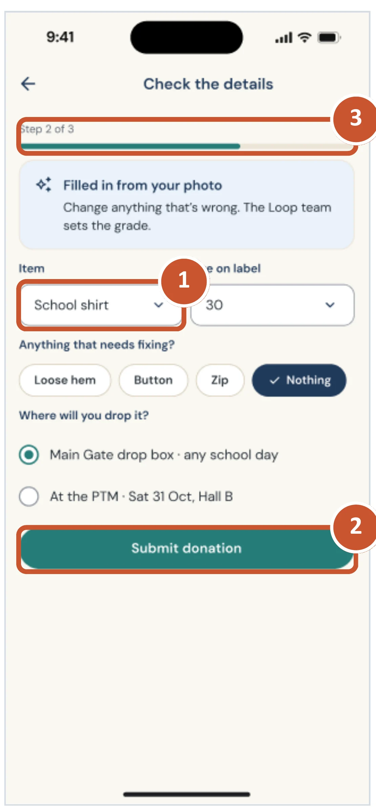
Before · V1 · from deck
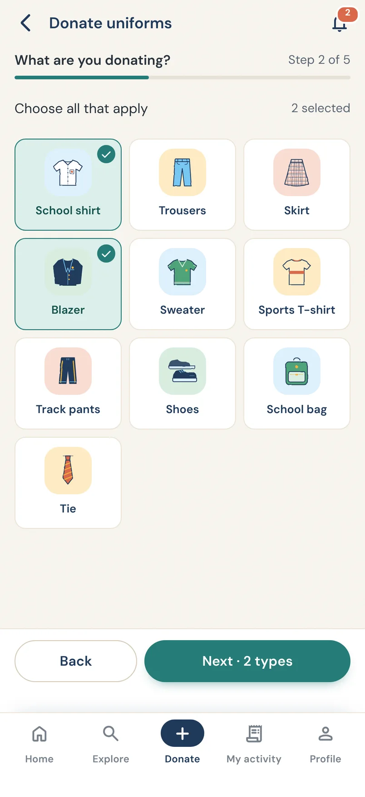
After · V2 · live prototype
Built in prototypeNot retested
Donating: one item per form → choose everything at once
Pick many items togetherBeforea single “Item” dropdownAftera grid where any number of items can be ticked
A guided next stepBefore“Submit donation” after one itemAfter“Next · 2 types” walks through each item's details
Smaller, clearer stepsBefore3 crowded stepsAfter5 short steps with a progress bar and prefilled answers
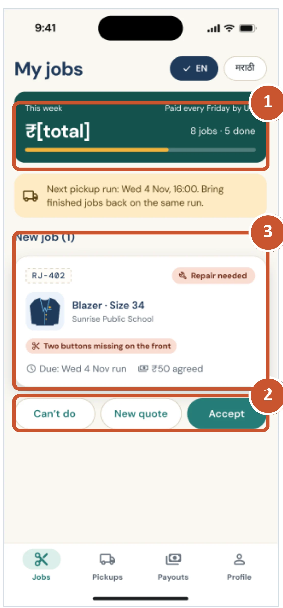
Before · V1 · from deck
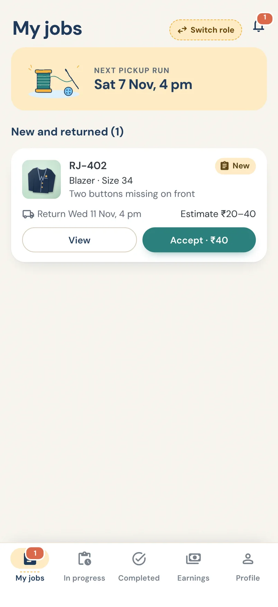
After · V2 · live prototype
Built in prototypeNot retested
Tailor jobs: unclear money → clear price, pickup and rework
Pickup run firstBeforethe earnings card showed “₹[total]” (broken)Afterthe next pickup run is the first thing on screen
Price before you acceptBeforethree equal buttons, no price shownAfteran estimate and “Accept · ₹40” on the button
Rework is visibleBeforesent-back jobs were hard to findAftera “Rework needed” card with the QC result
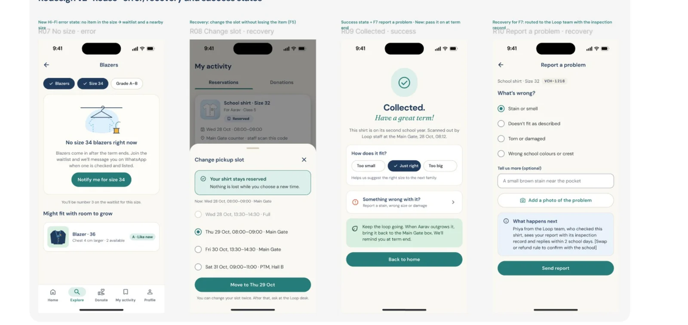
V2 error, recovery and success states (from deck): waitlist when a size is out, change slot without losing the item, rate the fit after collection, report a problem routed with the inspection record.
What's built, what isn't, what's tested
9built in the prototype
2designed or planned, not fully built
0retested
#
V2 change · effect on the loop
Status
Retested
F1
Name the hub role as Loop staffShown as “Loop Hub Coordinator · Loop Staff”. A separate School admin view signs off repaired items. School stays in the loop.
“No phone?” step at the kioskIn the refinement plan; no screen exists in the deck or the prototype.
Planned, not designed
No
F3
One handling-fee rule with an info tipBuilt as a single “service fee” by item size, with an info sheet and itemised totals. Trust in choosing pre-owned.
Built
No
F4
One A / B / C condition scale everywhereTrust in condition.
Built
No
F5
Change slot and Cancel on every state; hold timeChange pickup slot and Cancel; “Held until the end of your pickup day.” The deck's change-twice limit is not in the prototype. Fewer items left idle.
Built
No
F6
Accept / Can't do / New quote; weekly pay cardBuilt as Accept · New quote · “Can't take”, plus Earnings, paid every Saturday. Repair partner retained.
Built
No
F7
Report a problem after collectionProblems fixed, trust kept.
Built
No
F8
Language picker; Hindi and Marathi screensBuilt only as a message-language preference and a chat that accepts Hindi and Marathi. App screens remain English.
Partly built
No
New
“Outgrown? Pass it on” prompt at term endMore items enter the loop.
Built
No
UI
Reservation bag · multi-item donation · tailor pickup run, estimate and rework card
Built
No
Status checked against the deployed v3 prototype. No V2 change has been retested with users.
Chapter 12 · Impact, business model and reflection
Designing for reuse means measuring what actually stays in use.
The value comes from garments actually reused and people actually supported, not from the app. No impact is claimed before a pilot.